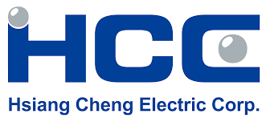

林子勛
Email：wfqsx58037@gmail.com
Phone：0966396337
Kaohsiung City, Taiwan
🎯個人簡介
您好，我是林子勛，我是一名 活潑、熱情並樂於與人交流的人，喜歡學習新技術並積極解決問題。在上一份工作中，曾在專案中 指導新進同事熟悉流程，並建立共享文件整理常見問題與解法，讓同事在遇到問題時能快速找到答案，因此同事們也樂於主動向我請教，合作過程融洽。
目前正轉職成為前端工程師，具備自動化系統與資料庫管理的實務經驗，曾協助專案建立 SOP 流程與資料驗證機制，提升測試效率並強化跨部門協作。大學期間曾開發 LINE Bot 校園資訊系統，累積將需求轉化為實際產品的經驗。
現在透過六角學院 Vue 課程 系統化學習前端開發，並持續強化 JavaScript、Vue.js 與 React的技能，搭配 FreeCodeCamp、YouTube 教程與實作練習，逐步深化對 CSS、Bootstrap、RWD的理解。近期目標是完成 To-DoList 專案，未來希望能結合既有的系統思維與前端開發能力，打造結構清晰、可重複利用的元件與產品，為團隊貢獻價值。
💻 技能專長
- Frontend:JavaScript (ES6+), Vue.js, React, HTML5, CSS3, RWD
- Backend & Database:Python, PostgreSQL, MySQL, Microsoft Access
- Tools & Workflow:Git, GitHub Pages, Vite, Linux
- Learning Path:TypeScript, Tailwind CSS, Testing (Vitest/Playwright)
🧪 專案經驗
日檢倒數進度追蹤工具 | React 學習專案
- 使用React、JavaScript、LocalStorage開發倒數計時與待辦清單功能，並解決 Vite 部署路徑問題。
- 成功部署至 GitHub Pages，支援跨裝置使用，強化前端專案實作與響應式設計能力。
資管快易通 LINE Bot 系統 | 大學畢業專題
- 擔任組長，負責系統架構設計與 80% 核心程式開發，使用Python、LINE Messaging API、PostgreSQL整合 8 項資訊模組。
- 成功部署至 GitHub Pages，支援跨裝置使用，強化前端專案實作與響應式設計能力。
Vue.js 練習專案 | 線上課程實作
- 完成註冊登入驗證、動態菜單操作等功能，熟悉 Props/Emit 父子組件通訊機制。
- 建立可延伸的應用基礎，規劃 TodoList 與完整認證流程。
💻 工作經驗

祥正電機股份有限公司
Sept. 2023 - May. 2024
助理工程師
- 使用 Microsoft Access 輸入並驗證 50+ 筆資料，匯入至 Linux 系統後進行現場測試。
- 撰寫 SOP 與錯誤紀錄，提升測試精確度與流程效率。
- 與應服部、業務部及承包商協作，優化跨部門溝通。
- 協助 3 位新同事快速熟悉流程，解答約 40% 問題，縮短上手時間並提升團隊效率。
🎓教育背景
資訊管理系 學士學位
南臺科技大學｜2019 - 2023｜（GPA 3.66/4.3）
- 相關課程：資訊安全概論、資料庫管理、程式設計與資料結構
🏆 證照與語言能力
專業認證
- CompTIA Security+（資訊安全認證）
- ICDL Computing（運算思維 & Python 程式設計）
- TQC Project Management Fundamentals（專案管理基礎認證）
語言認證
- 中文：母語
- 英文：TOEIC 625（Intermediate）
- 日文：JLPT N5（Beginner）
🌟 個人特質與學習方向
- 核心優勢:自學力強、問題解決能力佳，具備跨部門協作與專案推進經驗。
- 學習方式線上課程、技術文件研讀與專案實作，持續精進前端技能。
- 未來目標：專注於現代前端開發流程、響應式設計與使用者體驗優化。